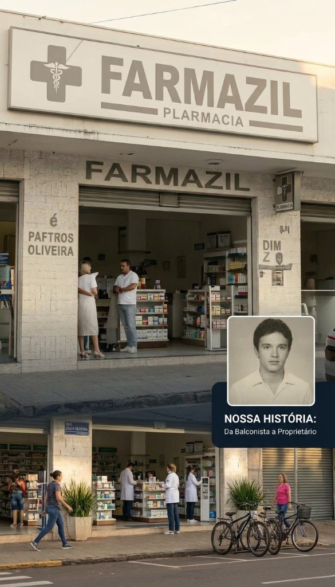
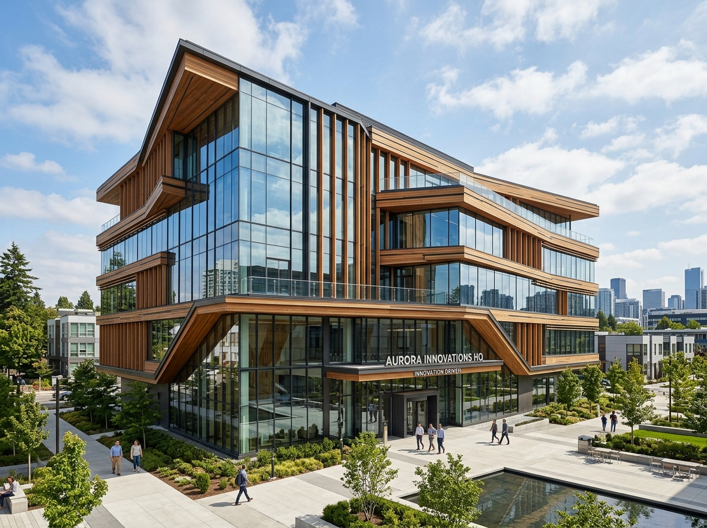

TRAJETÓRIA
FARMAZIL
De balconista dedicado a proprietário de uma marca respeitada no setor farmacêutico.
Conheça os marcos da jornada empreendedora e comunitária de Zildo Oliveira. Uma história construída com integridade, trabalho e compromisso com o futuro de Toledo.
“Transformar desafios em oportunidades e liderar pelo exemplo é o que move a minha jornada todos os dias.”
A trajetória de Zildo Oliveira teve início no trabalho diário como balconista de farmácia, onde desenvolveu a escuta atenta e o respeito direto ao cidadão. Movido pela determinação e disciplina, transformou aprendizados em impulso para fundar e expandir a Farmazil, consolidando sua reputação no comércio local.
Com o crescimento de seus empreendimentos, Zildo expandiu sua atuação para o setor corporativo e de desenvolvimento imobiliário através da Zil Empreendimentos. Sua gestão é reconhecida pela capacidade analítica, planejamento estratégico rigoroso e visão de longo prazo para fortalecer Toledo.
Para Zildo, o sucesso de qualquer empreendimento ou projeto coletivo reside no investimento em pessoas. Sua filosofia combina consistência operacional, ética inegociável e dedicação constante a servir a comunidade com soluções práticas e duradouras.
Trabalho como balconista e fundação da marca Farmazil com foco em atendimento humano.
Diversificação dos negócios para o setor imobiliário e corporativo de grande porte.
Atuação executiva e pública em Toledo-MG pautada pela eficiência e transparência.
Capacitação de novas lideranças e execução contínua de projetos estruturantes.

De balconista dedicado a proprietário de uma marca respeitada no setor farmacêutico.
A base sólida, união e o combustível diário para transformar vidas e propósitos.

Visão inovadora para desenvolvimento urbano, investimentos e projetos de escala.
Capacitando novos talentos e preparando a próxima geração para grandes conquistas.
Presença constante e trabalho dedicado às causas sociais e bem-estar em Toledo.
Acesse a apresentação institucional completa ou entre em contato diretamente com a equipe executiva.